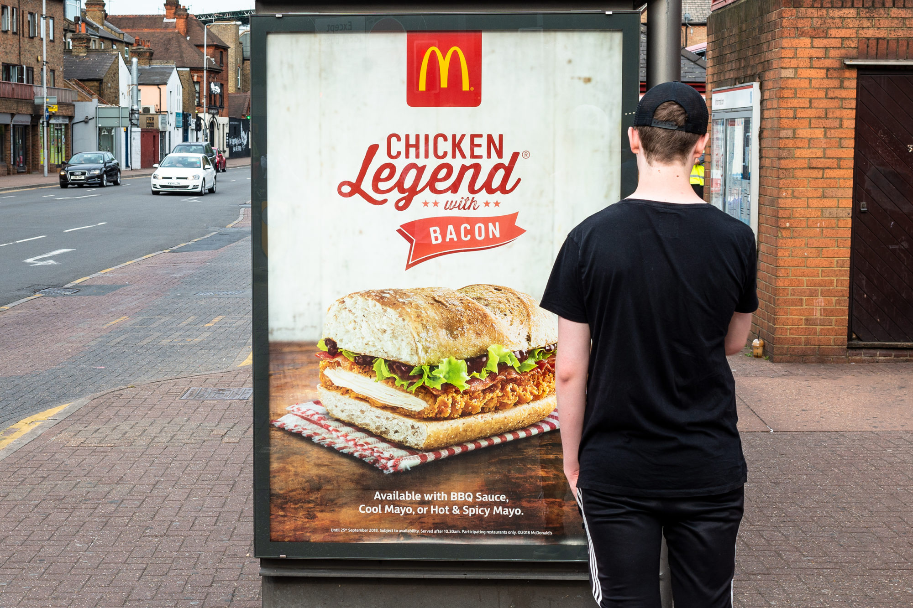

X sues Modi's government over content removal in new India censorship fight

NEW DELHI, March 20 (Reuters) - India's IT ministry has unlawfully expanded censorship powers to allow the easier removal of online content and empowered "countless" government officials to execute such orders, Elon Musk's X has alleged in a new lawsuit against New Delhi. The lawsuit and the allegations mark an escalation in an ongoing legal dispute between X and Prime Minister Narendra Modi's government over how New Delhi orders content to be taken down. It also comes as Musk is getting closer to launching his other key ventures Starlink and Tesla in India. The Technology Roundup newsletter brings the latest news and trends straight to your inbox. Sign up here.
In the new court filing dated March 5, X argues India's IT Ministry is asking other departments to use a government website launched by the Ministry of Home Affairs last year to issue content blocking orders and mandate social media companies to join the website too. This mechanism, X says, does not contain the stringent Indian legal safeguards on content removal that required such orders to be issued in cases such as harm to sovereignty or public order, and came with strict oversight of top officials.
Advertisement · Scroll to continue
India's IT ministry redirected a Reuters' request for comment to the home affairs ministry, which did not respond. The website creates "an impermissible parallel mechanism" that causes "unrestrained censorship of information in India", X said, adding it is seeking to quash the directive. X's court papers are not public and were reported for the first time by media on Thursday. The case was briefly heard earlier this week by a judge in the High Court of southern Karnataka state but no final decision was reached. It will now be heard on March 27. In 2021, X, formerly called Twitter, was locked in a stand-off with the Indian government over non-compliance of legal orders to block certain tweets related to a farmers' protest against government policies. 'It can express happiness, it dances.
X later complied following public criticism by officials, but its legal challenge to the decision is continuing in Indian courts.
Link to the article